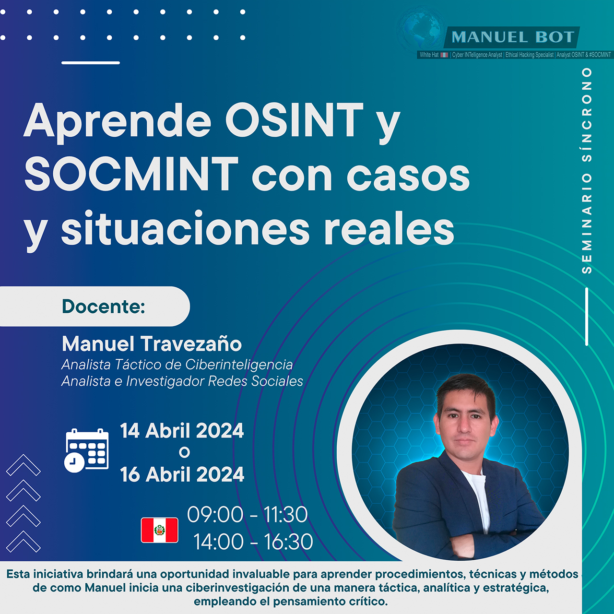
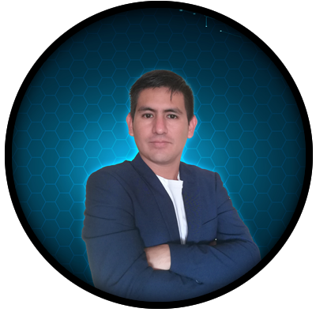

APRENDE PROCEDIMIENTOS, TÉCNICAS Y MÉTODOS DE INVESTIGACIÓN CON MANUEL TRAVEZAÑO

¡Sumérgete en el Laboratorio Intensivo de Formación diseñado especialmente para analistas e investigadores en OSINT y SOCMINT,
detectives privados, peritos forenses, abogados y público en general! Esta experiencia enriquecedora se extenderá por
un mínimo de dos horas y media en dos fechas diferentes.
📘 El seminario se realizará de manera síncrona y en tiempo real a través de la plataforma en línea Microsoft Teams.
¡Prepárate para una inmersión total en el mundo de la ciberinteligencia!
detectives privados, peritos forenses, abogados y público en general! Esta experiencia enriquecedora se extenderá por
un mínimo de dos horas y media en dos fechas diferentes.
📘 El seminario se realizará de manera síncrona y en tiempo real a través de la plataforma en línea Microsoft Teams.
¡Prepárate para una inmersión total en el mundo de la ciberinteligencia!
Fecha del seminario online:
⭐ DOMINGO 14 DE ABRIL 2024o
⭐ LUNES 16 DE ABRIL 2024
Hora del seminario online:
⭐ 09:00 a 11:30o
⭐ 15:00 - 17:30
ZONA HORARIA UTC-5 (PERÚ)
DICTADO POR:
📘 Más de 08 años de experiencia en el Departamento de Ciberinteligencia de Perú respaldan su expertise.
📘 Docente e Instructor destacado en cursos OSINT y SOCMINT en la Policía de Perú, Udemy, LISA Institute y otros.
📘 Ponente internacional, compartiendo conocimientos sobre ciberinteligencia en países como Guatemala, México, Colombia, España, Ecuador y Perú.
📘 ¡Una oportunidad única de aprender de un experto en la materia!
OBJETIVOS PRINCIPALES:
🔎 Esta iniciativa proporcionará una valiosa oportunidad para adquirir ciertos conocimientos en investigación.
🔎 Aprender OSINT desde un enfoque analítico, táctico y hasta inclusive el estratégico, respaldado por el pensamiento crítico.
🔎 El pensamiento crítico involucra el uso del razonamiento, la lógica y la creatividad para llegar a conclusiones fundamentadas.
INCLUYE:
🔎 Compendio de los casos a resolver en formato PDF. (Será enviado a su email días antes del evento).
🔎 Descuentos exclusivos a mis demás cursos y talleres de formación de manera síncrona y asíncrona.
REQUISITOS:
👨🏻💻 Contar con todas las ganas de aprender.
Descripción:
Nuestro analista táctico Manuel presentará situaciones y ejemplos reales, permitiendo a los participantes sumergirse
en el proceso mismo de la ciberinvestigación. Esta metodología involucra el uso del razonamiento, la lógica y la
creatividad para llegar a conclusiones fundamentadas, todo ello en un contexto práctico y aplicable, creado exclusivamente para ti.
NOTA: Este seminario está programado para realizarse en dos fechas y horarios diferentes, ofreciendo flexibilidad para
que los participantes puedan elegir la que mejor se ajuste a sus agendas y necesidades.
en el proceso mismo de la ciberinvestigación. Esta metodología involucra el uso del razonamiento, la lógica y la
creatividad para llegar a conclusiones fundamentadas, todo ello en un contexto práctico y aplicable, creado exclusivamente para ti.
NOTA: Este seminario está programado para realizarse en dos fechas y horarios diferentes, ofreciendo flexibilidad para
que los participantes puedan elegir la que mejor se ajuste a sus agendas y necesidades.
¡Empieza a aprender ya mismo!
¿Para quién es este curso?
⭐ Analistas e Investigadores OSINT
⭐ Detectives o investigadores privados
⭐ Investigadores forenses
⭐ Órganos policiales y militares
⭐ Agentes de Inteligencia
⭐ Abogados, fiscales y juristas
⭐ Entre otros.
⭐ Detectives o investigadores privados
⭐ Investigadores forenses
⭐ Órganos policiales y militares
⭐ Agentes de Inteligencia
⭐ Abogados, fiscales y juristas
⭐ Entre otros.
INSCRIBIRSE:
Métodos de Pago:
⭐ Nacionales (Perú) Pago o transferencia Interbancario. (Otros medios de pago, coordinar con el equipo organizador)⭐ Internacionales: Pago vía Paypal.
CIERRE DE INSCRIPCIONES:
SÁBADO 13 DE ABRIL DE 2024 - HORA PERÚ. ¡Nos vemos en el seminario online!
Atentamente:
Equipo organizador de Manuel BOT S.A.C.
